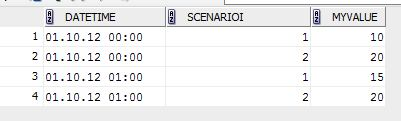
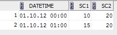

Oracle 10g doesn't have the Pivot function. To convert a common type a data (Date, Id, Value) into a list of (Date, Value of Id1, Value of Id2, ...), if you know the number of columns (and their names), you can a decode function (basically a SQL IF or CASE) function to do it.
Demonstration below with the code to build the table and test it.
CREATE TABLE "TESTTABLE"("DATETIME" DATE,
"SCENARIOI" NUMBER,
"MYVALUE" NUMBER);
REM INSERTING into TESTTABLE
Insert into TESTTABLE (DATETIME,SCENARIOI,MYVALUE) values (to_date('01.10.12 00:00','DD.MM.RR HH24:MI'),1,10);
Insert into TESTTABLE (DATETIME,SCENARIOI,MYVALUE) values (to_date('01.10.12 00:00','DD.MM.RR HH24:MI'),2,20);
Insert into TESTTABLE (DATETIME,SCENARIOI,MYVALUE) values (to_date('01.10.12 01:00','DD.MM.RR HH24:MI'),1,15);
Insert into TESTTABLE (DATETIME,SCENARIOI,MYVALUE) values (to_date('01.10.12 01:00','DD.MM.RR HH24:MI'),2,20);
The created and populated table: 
{kind=link}
To extract the data in a matrix format, with one column per scenario, we can use either of the queries below:
select datetime,
max(decode(scenarioi,1, MyValue)),
max(decode(scenarioi,2, MyValue)) from testtable
group by datetime
order by 1;
SELECT DateTime, MAX(One) as Sc1, MAX(Two) as Sc2
FROM (SELECT datetime,
decode(scenarioi, 1, MyValue) as One,
decode(scenarioi, 2, MyValue) as Two
FROM testtable
)
GROUP BY DateTime
ORDER BY 1;
An example output of the query: 
{kind=link}
It would be nice to have a query that could automatically select a number of columns and convert them, it seems that requires some PLSQL, but sadly I've not been able to figure it out yet. If anyone has such an example, just leave a comment.